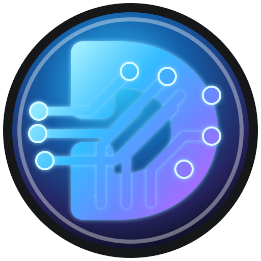
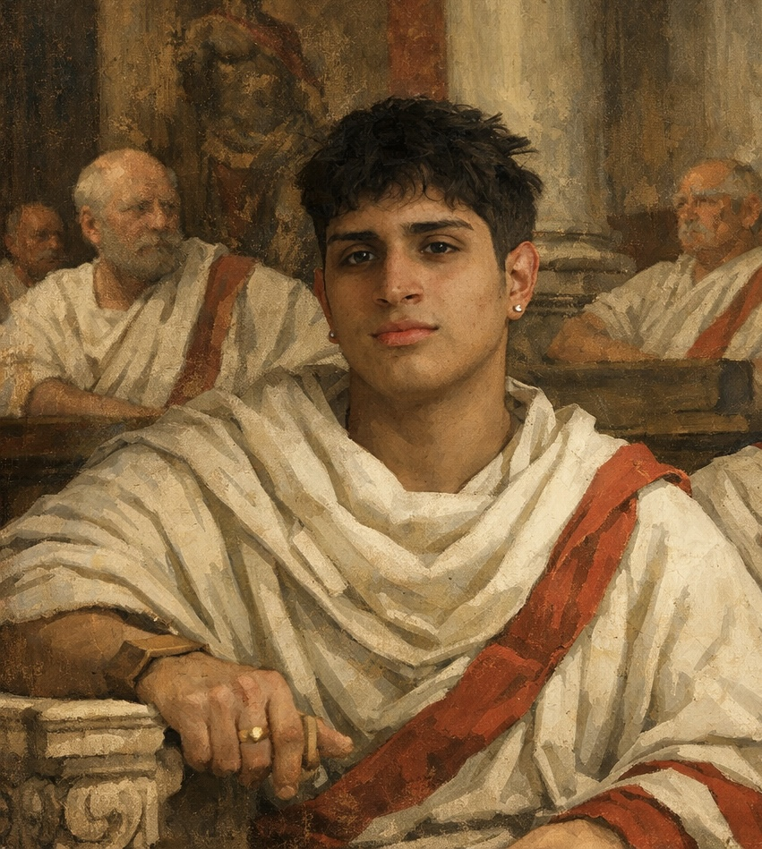
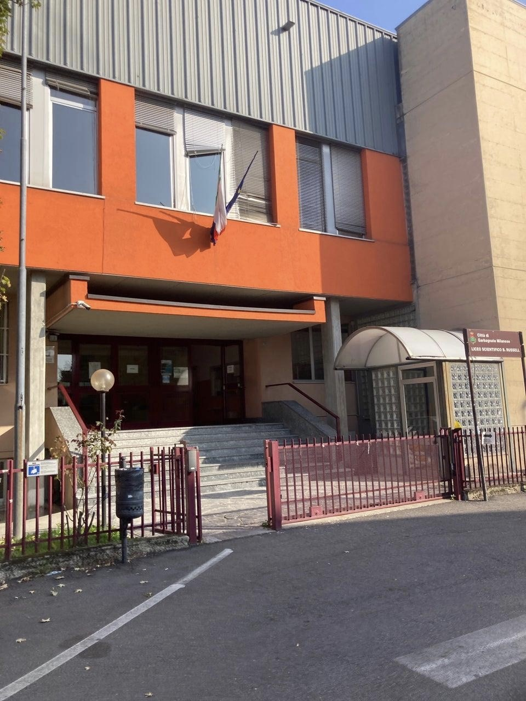
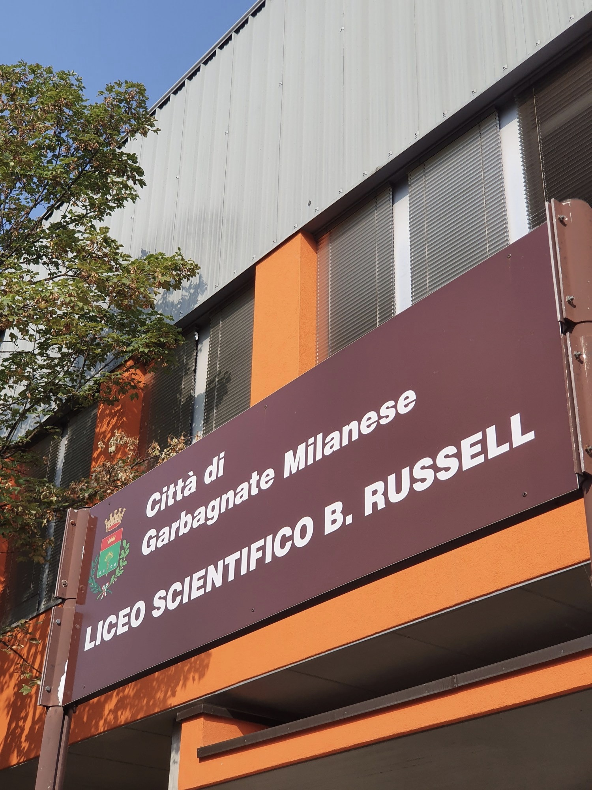

Mi presento
Mi chiamo Nicolò e abito ad Arese, una città che mi piace molto.


Presentazione personale
Sport, videogiochi, tecnologia e creatività: una pagina per raccontare chi sono, cosa mi piace e dove voglio arrivare.
Esperienza
Sezioni pulite, animazioni morbide e contenuti immediati: il sito racconta Nicolò senza riempire lo schermo di testo inutile.
Identità
Mi chiamo Nicolò e abito ad Arese, una città che mi piace molto.
Frequento il Liceo Russell di Garbagnate Milanese.
È la mia materia preferita, perché mi permette di creare cose con il computer.
Liceo Russell
Due immagini grandi e pulite per raccontare il luogo dove studio ogni giorno.


Interessi
Il mio sport preferito è la pallanuoto, ma mi piacciono molto anche gli altri sport.
Mi piace giocare ai videogiochi, soprattutto a Brawl Stars.
Mi piace giocare a scacchi perché è un gioco di strategia e ragionamento.
Apri scacchieraMi piace risolvere il Cubo di Rubik e allenare la mente con logica e memoria.
Apri Cubo 3DIl mio cibo preferito è il sushi.
Futuro
Voglio migliorare sempre di più nelle mie passioni.
Voglio continuare a imparare cose nuove, soprattutto nel mondo dell'informatica.
Vorrei diventare sempre più bravo a realizzare progetti originali e utili.